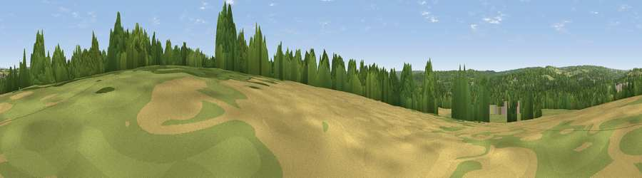

Viewpoint near Twyford
#41971 in England · top 72% of its area beats it · near Twyford · path 111 mWhere it is
The exact computed spot (SU 48571 23737). Click the marker for map links.
Public access: the nearest public right of way is about 111 m away — the final stretch may cross private land. Computed from Natural England's CRoW access layer and OpenStreetMap rights of way — not the legal definitive map. Always verify locally.
The view, rendered

A 360° render of this exact spot computed from the terrain model, tree cover and land cover — summer colours, afternoon light, calibrated against photographs of famous viewpoints. Real trees, hedges and buildings will differ in detail.
The panorama
Grey silhouette: terrain skyline in each direction (720 bearings, Earth curvature and refraction included). Dashed green: skyline with trees (+15 m) and buildings (+8 m) as obstacles. Blue strip: how far the ground is visible on each bearing.
Where the view opens
Wedge length = distance to the farthest visible ground on that bearing (vegetation-aware). Rings at 10, 25 and 50 km.
What fills the view
41% grassland · 38% woodland · 14% cropland · 7% built-up
Angular shares of the visible panorama (visual magnitude), not map area. Landscape diversity 0.52 (0–1 Shannon).
Key numbers
More beautiful places nearby
The staircase of upgrades: each row has a higher view potential than everything closer. Driving times are estimates from straight-line distance, calibrated against real road routing — check an actual route before setting out.
| Place | Direction | Drive | Score |
|---|---|---|---|
| Cockscomb Hill | E · 1 km | ~4 min | 39.9 |
| Viewpoint near Chilcomb | NNE · 4 km | ~9 min | 48.4 |
| Deacon Hill | NNE · 4 km | ~10 min | 56.7 |
| Viewpoint near Chilcomb | NE · 6 km | ~12 min | 63.3 |
| Beacon Hill | E · 12 km | ~22 min | 71.7 |
| Viewpoint near Meonstoke | ESE · 16 km | ~28 min | 74.8 |
| Viewpoint near Buriton | E · 23 km | ~38 min | 75.3 |
| Viewpoint near Southwick | SE · 23 km | ~38 min | 76.6 |
51.01097, -1.30903 · source: osm peak · position refined by local search. Computed location — check access rights before visiting.